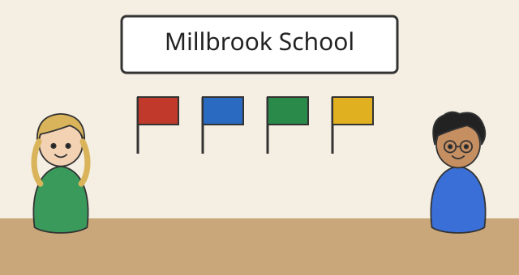

Schule hier und dort
Mit einem KI-Tutor lernen
Ein KI-Tutor erklärt dir diese Seite und hilft dir bei den Übungen. Wähl deinen Assistenten:
Mit Claude öffnen Mit ChatGPT öffnen Mit Mistral Vibe öffnen
Du nutzt dein eigenes Konto beim Anbieter. Der Assistent ist kein Angebot von lernapps.net: lernapps liefert nur Inhalte und Übungen. Die Wahl gilt für alle Seiten, nur auf diesem Gerät.
Sophie schreibt nach Hause
Sophie schreibt ihrer Klasse in Deutschland eine Nachricht. Amir sitzt neben ihr. Sie erzählt, was an der Millbrook School anders ist.

Sophie (links) und Amir (rechts) vor der Millbrook School. Die vier Fahnen gehören zu den houses.
Quelle: eigene Zeichnung. Lizenz: CC-BY-4.0.Das kannst du danach: Sagen, was an der Millbrook School anders ist als an deiner Schule: Uniform und houses.
Übung
Lösung
Eine Schuluniform richtige Antwort
Uniform heißt Uniform. Die Kinder der Schule tragen alle dieselbe Kleidung.
Sportkleidung
Sportkleidung trägt man im Sport (PE). Uniform ist die Kleidung für den ganzen Schultag.
Einen Rucksack
Einen Rucksack heißt bag. Wear heißt tragen oder anhaben.
Wear heißt tragen. Ein uniform ist die Kleidung, die alle Kinder an der Schule tragen.
Mehr dazu:
Uniform und houses
Viele Schulen in Großbritannien haben eine Schuluniform. Auch die Millbrook School hat eine. Dazu kommt das house system: Die Schule ist in Gruppen eingeteilt, die houses heißen. Jedes Kind gehört zu einem house. Die houses können zum Beispiel im Sport gegeneinander antreten.
| Ausdruck | Bedeutung |
|---|---|
| At Millbrook we wear a uniform. | In Millbrook tragen wir eine Uniform. |
| At my school we don't wear a uniform. | An meiner Schule tragen wir keine Uniform. |
| At Millbrook we have houses. | In Millbrook haben wir houses. |
Merke
Ein house in der Schule ist kein Gebäude, sondern eine Gruppe von Kindern. Nicht jede Schule in Großbritannien hat eine Uniform oder houses. Sophie erzählt von Millbrook.
Übung
Übung
Lösung
Richtige Antwort: Die Aussage stimmt nicht.
Ein house ist eine Gruppe von Kindern der Schule. Jedes Kind gehört zu einem house.
Mehr dazu:
Übung
Lösung
Richtige Antwort: At Millbrook we wear a uniform. – In Millbrook tragen wir eine Uniform.; At my school we don't wear a uniform. – An meiner Schule tragen wir keine Uniform.; At Millbrook we have houses. – In Millbrook haben wir houses.
Don't wear heißt „tragen nicht“. Houses sind hier Gruppen von Kindern, keine Gebäude.
Mehr dazu:
Übung
Hör zu und schreibe, was Sophie sagt.
- KI
- KI
- KI
Lösung
- At Millbrook we wear a uniform. (auch richtig: At Millbrook we wear a school uniform.)
- At my school we don't wear a uniform. (auch richtig: At my school we don't wear a school uniform.; At my school we do not wear a uniform.; At my school we do not wear a school uniform.)
- At Millbrook we have houses.
Übung
Was sagt Sophie auf Englisch? Schreibe den ganzen Satz.
- In Millbrook tragen wir eine Uniform.
- An meiner Schule tragen wir keine Uniform.
- In Millbrook haben wir houses.
Lösung
- At Millbrook we wear a uniform. (auch richtig: At Millbrook we wear a school uniform.)
- At my school we don't wear a uniform. (auch richtig: At my school we don't wear a school uniform.; At my school we do not wear a uniform.; At my school we do not wear a school uniform.)
- At Millbrook we have houses.
Selbst sagen und schreiben
Übung
Hör zu, sprich nach und nimm dich auf. Vergleiche dann mit dem Original.
Tipp
Hör das Beispiel zuerst. Sprich dann langsam nach und vergleiche deine Aufnahme mit dem Original.
- At Millbrook we wear a uniform.KI
- At my school we don't wear a uniform.KI
- At Millbrook we have houses.KI
Zum Aufnehmen braucht diese Übung JavaScript. Die Beispiele kannst du auch ohne anhören.
Lösung
- At Millbrook we wear a uniform.
- At my school we don't wear a uniform.
- At Millbrook we have houses.
Offene Aufgabe
Vergleiche Millbrook mit deiner Schule. Schreibe zwei kurze englische Sätze, einen über Millbrook und einen über deine Schule, zum Beispiel über die Uniform.
Eine gute Antwort enthält:
Lösung
At Millbrook we wear a uniform. At my school we don't wear a uniform.
Dein Poster und dein Kalender sind fertig
Du hast Sophies erste Tage in Millbrook miterlebt. Auf deinem Poster stehen Ausdrücke zum Grüßen, Nachfragen, für Zahlen, Uhrzeit und Datum und für die Schule. Dein Kalender hat Uhrzeiten, Geburtstage, einen Stundenplan und Feste. In der nächsten App lernst du, wie Englisch gebaut ist, zum Beispiel die kleinen Wörter I, me und my.